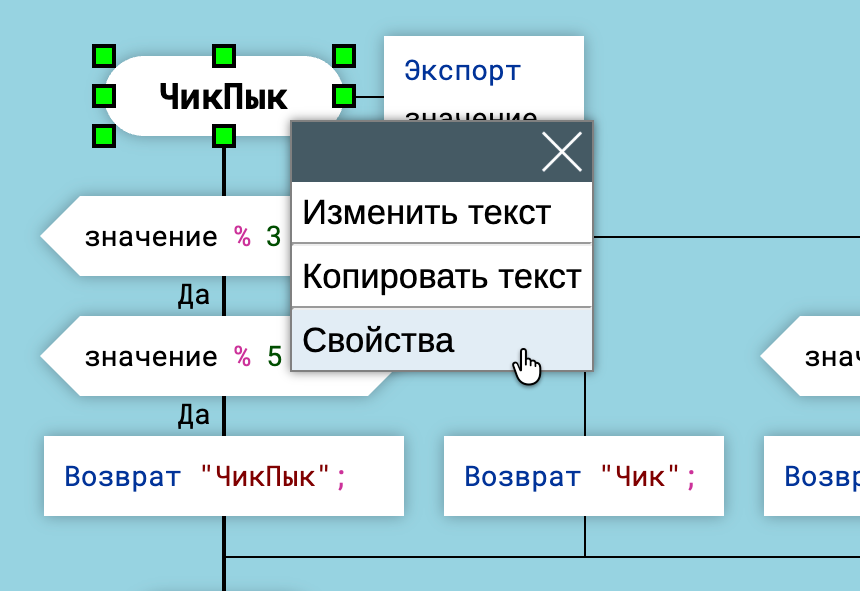
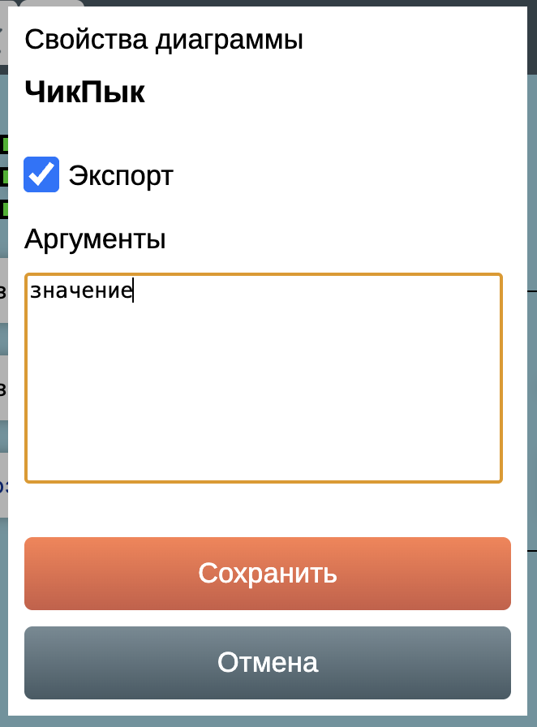
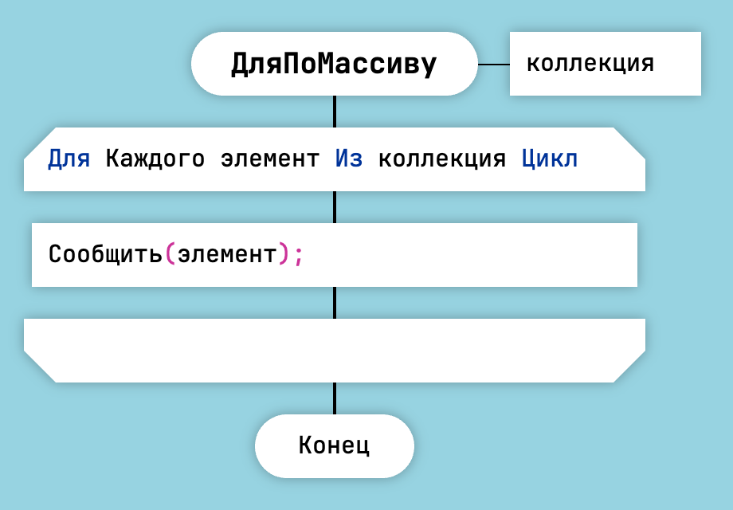
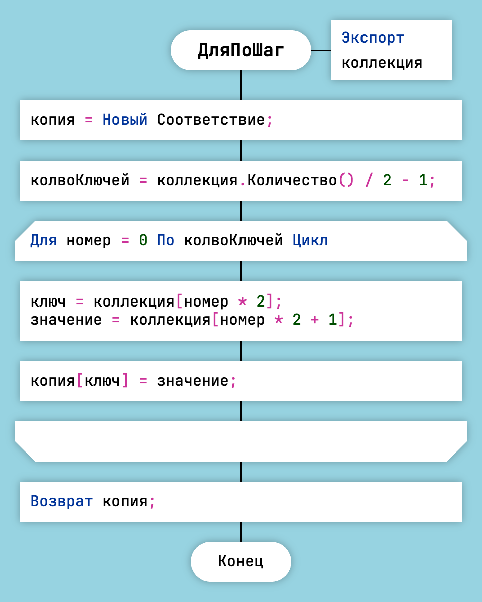
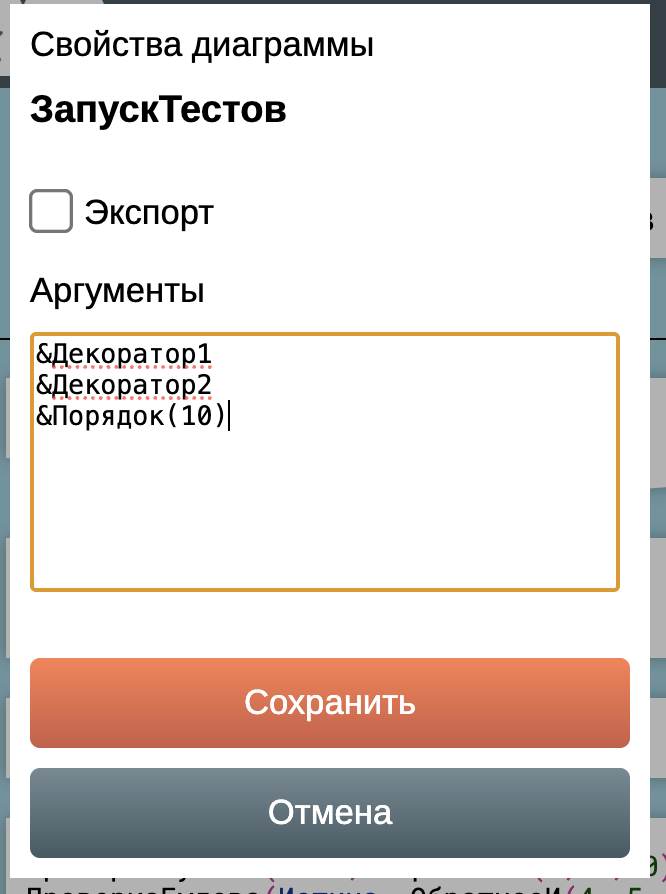

Генерация кода на языке OneScript
ДраконТех генерирует код для языка OneScript/1С:Предприятие. ДраконТех создаёт один os-модуль для каждого проекта.
Структура модуля
Код модуля OneScript может иметь три части:
- Секция переменных.
- Секция методов.
- Секция тела модуля.
Чтобы поместить код в секцию переменных, создайте функцию со специальным названием Заголовок. Тело функции Заголовок превратится в секцию переменных.
Чтобы поместить код в тело модуля, создайте функцию со специальным названием Тело. ДраконТех запишет содержимое этой функции в конец модуля.
Секция методов формируется генератором автоматически. Для каждой дракон-схемы генератор создаст метод.
Экспортируемые методы
Чтобы экспортировать метод:
- Щёлкните правой кнопкой мыши по заголовку диаграммы.
- Выберите “Свойства”.
- Поставьте галочку в графе “Экспорт”.

Свойства диаграммы

Экспорт метода
Цикл Для
Икона "Цикл Для" является аналогом операторов цикла for и foreach.
Текст в иконе "Цикл Для" копируется в сгенерированный код без изменений. Например:
Для Каждого элемент Из коллекция Цикл
или
Для номер = 0 По колвоКлючей Цикл

Цикл Для Каждого в OneScript

Цикл Для По в OneScript
Классы и модули
Класс в OneScript используется так: сначала создаётся экзмемпляр класса, а потом вызываются его методы.
луня = Новый Кот("Луня");
луня.мяу();
Методы модуля вызывают без создания экзмепляра.
Котики.мяу("Луня");
Как классы, так и модули имеют один и тот же формат в OneScript и в ДраконТех.
Единственная разница: класс может иметь конструктор — особую функцию ПриСозданииОбъекта. В остальном структура модулей и классов неотличима.
Если положить os-файл в папку Классы, то интерпретатор воспримет этот файл как класс. Если положить файл в папку Модули — то как модуль.
Аннотации
Чтобы добавить одну или несколько аннотаций к методу, поместите их в поле "Аргументы" в свойствах диаграммы. Аннотации начинаются с символа амперсанд — &.

Аннотации методов
В данном примере метод ЗапускТестов получит следующие аннотации:
&Декоратор1 &Декоратор2 &Порядок(10)